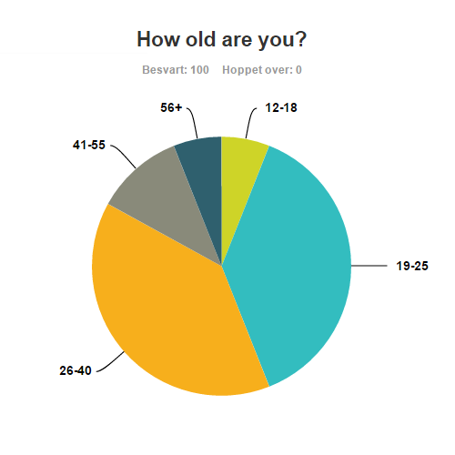
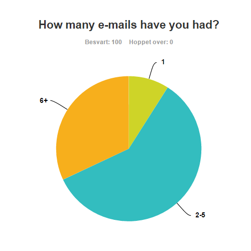
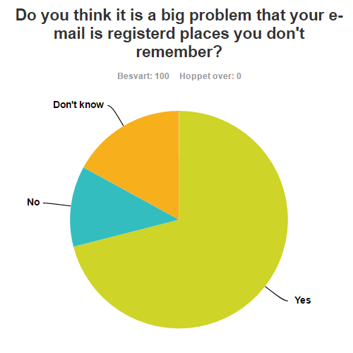
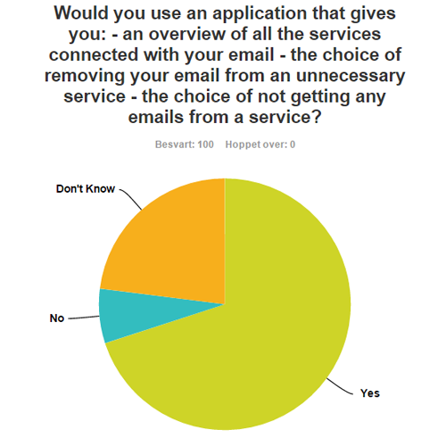
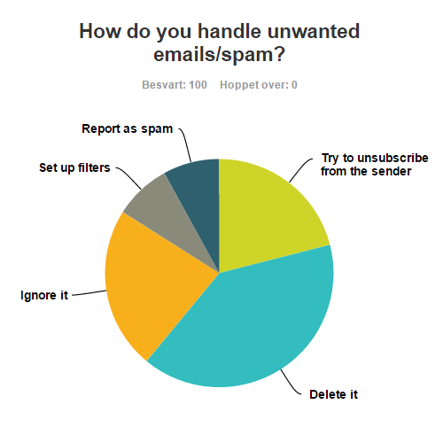

Problem
Solution
About us
Problem
Solution
About us
Everything technological that is too time consuming is a problem from a technological perspective. Especially if we could get the work done in minutes. Let’s look at these kinds of problems. But first, let us ask you some questions. Are you aware of all the services that are connected to your email address? Have you always had the same email address ever since you created one? You would probably answer “no” to at least one of the questions above. Then you would probably have experienced problems with unwanted emails or problems with changing to new email address without knowing the important services that has your old email address. Let's look at what people say about this.
We made a survey consisting of six questions. The survey was conducted in november 2016 among 100 email users from different age groups all around the world. The users were informed about that this survey is only being used to this final project. We will use the results of the survey to show the importance of the problems we will address soon. The results:
Here we can see that 6% of the users were from age 12-18, 38% of user were from age 19-40, 39% of the users were from age 41-55 and 6% from age 56+.
This diagram shows that over 90% of the people didn't have the same email address ever since they created one.

This diagram shows that over 90% of the people aren't aware of all the services connected to their email address.
This diagram shows that over 70% of the people think that their unawareness of the places their email is registered to is a big problem.
This diagram shows that over 70% of the users would have used the application we will be describing as our solution for the problems we will be adressing now.
The first problem: Unwanted emails. How do you handle unwanted emails? You can try to manually go and unsubscribe from every sender of the unwanted emails, delete every time you get an unwanted email, ignore every time you get an unwanted email, set up filters or report the unwanted email as spam. Let’s look at how our email users handle this problem.
These methods to prevent unwanted emails are too time consuming or annoying. From a technological perspective, this is a problem. How can we possibly prevent this time consuming work with unwanted emails? The answer is “e-Tracker”. We will tell you about it later. But first, let us address the second problem.
The first time you created an email address, you probably wouldn’t have thought of using it for professional inquiries. So, your first email address would have been something like sexyboy97@live.no, barbie23@gmail.com, kittygirl@yahoo.com or kingofoslo@hotmail.com. And now you want your email address to be more professional. So, you create a new email address. Or you just have another good reason to change your email address, so you create a new one. Here you can see how many of our email users that have changed their email addresses. Which is over 90% as said earlier.
But you have your previous email address registered to so many services that you don’t have any overview over the important ones. So, you must manually go and find the important services and send an email about your new email address. This is also time consuming which is also a problem from a technological perspective. And as said over 70% of our survey answerers think this is a big problem too.
How can we possibly prevent this time-consuming work forever? The answer for this one is “eTracker” too. What is this e-Tracker? The “e-Tracker” is a web-based application and our solution for the problems we adressed. You can read about our solution by clicking "Solution" in the navigation bar or you can click here.